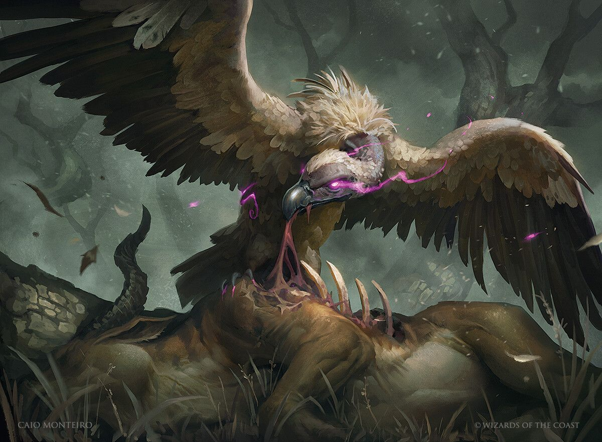

Отряд «Стервятники»
Группа приключенцев
Состав отряда:
Союзники:
- Корнелий | Архимагистр Академии Ваззар
- Ольга Заозёрская | Волшебник Ордена Праведности
- Фелиппа Бушующее Сердце | Паладин Ордена Праведности
- Амерот | Избранная Тиморы
Убежище
| Город Щит Веры |
Усадьба Шан Ву |
Особняк |
| Город Зиг |
Таверна «Континенталь» |
Комната |
| Место неизвестно |
Дом Корнелия |
Гостинная |
Журнал
- Поиск альтернативного решения проблемы магической катастофы
- Найти всех первородных драконов
- Уговорить Миаля остановить прорыв ада и бездны